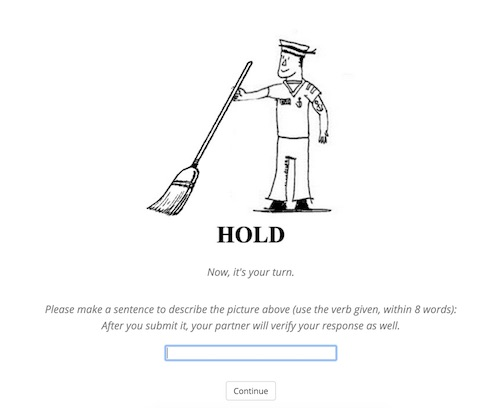

<!DOCTYPE html>
<html>

<head>
  <script src="jspsych-6.0.5/jspsych.js"></script>
    <script src="jspsych-6.0.5/plugins/jspsych-html-keyboard-response.js"></script>
    <script src="jspsych-6.0.5/plugins/jspsych-image-button-response.js"></script>
    <script src="jspsych-6.0.5/plugins/jspsych-survey-text.js"></script>
    <script src="jspsych-6.0.5/plugins/jspsych-image-text.js"></script>
    <script src="jspsych-6.0.5/plugins/jspsych-fullscreen.js"></script>
    <script src="jspsych-6.0.5/plugins/jspsych-categorize-image.js"></script>
  <script src="jspsych-6.0.5/plugins/jspsych-html-button-response.js"></script>
  <!-- csv -->
   <script src="jspsych-6.0.5/jquery-3.3.1.min.js"></script>
   <script src="jspsych-6.0.5/d3.v3.min.js"></script>
   <script src="https://unpkg.com/mathjs/dist/math.min.js"></script>
   <!-- <script src="jspsych-6.0.5/jquery-csv.js"></script> -->


    <link href="jspsych-6.0.5/css/jspsych.css" rel="stylesheet" type="text/css"></link>
      <style>
        
      </style>
</head>

<script>

  /********************* GLOBAL PARAM *******************/
  var timeline = [];
  var CONDITION = 'A';
  var SUBJECTID = null; // experimenter enter subject ID: 001
  var FULL_STIM = null; // need to randomized -> check null before exp starts
  var SUBJ_RAND_ORDER = null; // a object type {trialNum:[trial_num, prime_image_ID, prime_verb, prime_type, verif_ans, targ_image_ID]}
  // var SUBJDATA = './subject_data/'; // where data are saved 
  // var SUBJRAND = './subject_rand_order/';


  /********************* STIMULI PARAM *******************/

  // PRAC_STIMULI: well formatted, directly used in prac_trials
  var PRAC_STIM = [
  { prime_image_ID: "F001.jpg"  ,prime_verb:  "hammer"  ,verif_ans:'y' ,sentence:  "The person is hit the nail with the hammer.", targ_image_ID: "F007.jpg"  , targ_verb:  "bounce" },
  { prime_image_ID: "F002.jpg"  ,prime_verb:  "beg" ,verif_ans:'y' ,sentence:  "The man is beg for money on the street.", targ_image_ID: "F008.jpg"  ,targ_verb:  "curtsy"  },
  { prime_image_ID: "F003.jpg"  ,prime_verb:  "bow" ,verif_ans:'y',sentence:  "The gentleman is bow to the crowd.", targ_image_ID: "F009.jpg"  ,targ_verb:  "parachute"  },
  { prime_image_ID: "F004.jpg"  ,prime_verb:  "swat"  ,verif_ans:'n' ,sentence:  "The family is laughing together. ",targ_image_ID: "F010.jpg"  ,targ_verb:  "hatch"  },
  { prime_image_ID: "F005.jpg"  ,prime_verb:  "mop" ,verif_ans:'n',sentence:  "The cheerleaders are cheering for the team.", targ_image_ID: "F011.jpg"  ,targ_verb:  "snow"  },
  { prime_image_ID: "F006.jpg"  ,prime_verb:  "mine"  ,verif_ans:'n', sentence:  "The girl is singing a song.",targ_image_ID: "F013.jpg"  ,targ_verb:  "balanace" }
  ];

  /* full filler stimuli:  37 {prime + targ}*/
  var FILLERS = [
  { prime_image_ID: "F001.jpg"  ,prime_verb:  "hammer"  ,verif_ans: "y" ,sentence:  "The person is hit the nail with the hammer." ,targ_image_ID: "F038.jpg"  ,targ_verb: "curl"  },
{ prime_image_ID: "F002.jpg"  ,prime_verb:  "beg" ,verif_ans: "y" ,sentence:  "The man is beg for money on the street." ,targ_image_ID: "F039.jpg"  ,targ_verb: "cough" },
{ prime_image_ID: "F003.jpg"  ,prime_verb:  "bow" ,verif_ans: "y" ,sentence:  "The gentleman is bow to the crowd."  ,targ_image_ID: "F040.jpg"  ,targ_verb: "hide"  },
{ prime_image_ID: "F004.jpg"  ,prime_verb:  "clap"  ,verif_ans: "y" ,sentence:  "The person is clap after cleaning."  ,targ_image_ID: "F041.jpg"  ,targ_verb: "dry" },
{ prime_image_ID: "F005.jpg"  ,prime_verb:  "clap"  ,verif_ans: "y" ,sentence:  "The man is clap after the performance" ,targ_image_ID: "F042.jpg"  ,targ_verb: "write" },
{ prime_image_ID: "F006.jpg"  ,prime_verb:  "play"  ,verif_ans: "y" ,sentence:  "The girl is play the piano." ,targ_image_ID: "F043.jpg"  ,targ_verb: "celebrate" },
{ prime_image_ID: "F007.jpg"  ,prime_verb:  "bounce"  ,verif_ans: "y" ,sentence:  "The boy is bounce the basketball." ,targ_image_ID: "F044.jpg"  ,targ_verb: "operate" },
{ prime_image_ID: "F008.jpg"  ,prime_verb:  "curtsy"  ,verif_ans: "y" ,sentence:  "The girl is curtsy." ,targ_image_ID: "F045.jpg"  ,targ_verb: "knit"  },
{ prime_image_ID: "F009.jpg"  ,prime_verb:  "parachute" ,verif_ans: "y" ,sentence:  "The man is parachute to the ground." ,targ_image_ID: "F046.jpg"  ,targ_verb: "drill" },
{ prime_image_ID: "F010.jpg"  ,prime_verb:  "hatch" ,verif_ans: "y" ,sentence:  "The chick just hatch." ,targ_image_ID: "F047.jpg"  ,targ_verb: "comb"  },
{ prime_image_ID: "F011.jpg"  ,prime_verb:  "snow"  ,verif_ans: "y" ,sentence:  "It is snowing right now."  ,targ_image_ID: "F048.jpg"  ,targ_verb: "iron"  },
{ prime_image_ID: "F012.jpg"  ,prime_verb:  "bounce"  ,verif_ans: "y" ,sentence:  "The boy is bouncing the basketball." ,targ_image_ID: "F049.jpg"  ,targ_verb: "fall"  },
{ prime_image_ID: "F013.jpg"  ,prime_verb:  "balanace"  ,verif_ans: "y" ,sentence:  "The acrobat is balancing on the rope." ,targ_image_ID: "F050.jpg"  ,targ_verb: "hitchhike" },
{ prime_image_ID: "F014.jpg"  ,prime_verb:  "row" ,verif_ans: "y" ,sentence:  "The boy is rowing his boat. "  ,targ_image_ID: "F051.jpg"  ,targ_verb: "jump"  },
{ prime_image_ID: "F015.jpg"  ,prime_verb:  "brush" ,verif_ans: "y" ,sentence:  "The boy is brushing his teeth."  ,targ_image_ID: "F052.jpg"  ,targ_verb: "sneeze"  },
{ prime_image_ID: "F016.jpg"  ,prime_verb:  "slip"  ,verif_ans: "y" ,sentence:  "The man slipped on a banana peel." ,targ_image_ID: "F053.jpg"  ,targ_verb: "juggle"  },
{ prime_image_ID: "F017.jpg"  ,prime_verb:  "shower"  ,verif_ans: "y" ,sentence:  "The person is showering. " ,targ_image_ID: "F054.jpg"  ,targ_verb: "light" },
{ prime_image_ID: "F018.jpg"  ,prime_verb:  "salute"  ,verif_ans: "y" ,sentence:  "The soldier is saluting."  ,targ_image_ID: "F055.jpg"  ,targ_verb: "eat" },
{ prime_image_ID: "F019.jpg"  ,prime_verb:  "dip" ,verif_ans: "y" ,sentence:  "The person is dipping the chip in sauce."  ,targ_image_ID: "F056.jpg"  ,targ_verb: "drip"  },
{ prime_image_ID: "F020.jpg"  ,prime_verb:  "cry" ,verif_ans: "n" ,sentence:  "The boy shock himself."  ,targ_image_ID: "F057.jpg"  ,targ_verb: "miss"  },
{ prime_image_ID: "F021.jpg"  ,prime_verb:  "cry" ,verif_ans: "n" ,sentence:  "The girl is smile at the camera."  ,targ_image_ID: "F058.jpg"  ,targ_verb: "smoke" },
{ prime_image_ID: "F022.jpg"  ,prime_verb:  "golf"  ,verif_ans: "n" ,sentence:  "The boy is camp in the forest."  ,targ_image_ID: "F059.jpg"  ,targ_verb: "knight"  },
{ prime_image_ID: "F023.jpg"  ,prime_verb:  "cook"  ,verif_ans: "n" ,sentence:  "The two girls are whisper."  ,targ_image_ID: "F060.jpg"  ,targ_verb: "crawl" },
{ prime_image_ID: "F024.jpg"  ,prime_verb:  "box" ,verif_ans: "n" ,sentence:  "The man is ski down the mountain." ,targ_image_ID: "F061.jpg"  ,targ_verb: "make"  },
{ prime_image_ID: "F025.jpg"  ,prime_verb:  "make"  ,verif_ans: "n" ,sentence:  "The person buckle their shoes."  ,targ_image_ID: "F062.jpg"  ,targ_verb: "howl"  },
{ prime_image_ID: "F026.jpg"  ,prime_verb:  "laugh" ,verif_ans: "n" ,sentence:  "The grandmother swat at the fly."  ,targ_image_ID: "F063.jpg"  ,targ_verb: "conduct" },
{ prime_image_ID: "F027.jpg"  ,prime_verb:  "cheer" ,verif_ans: "n" ,sentence:  "The woman is mop the floor." ,targ_image_ID: "F064.jpg"  ,targ_verb: "hammer"  },
{ prime_image_ID: "F028.jpg"  ,prime_verb:  "sing"  ,verif_ans: "n" ,sentence:  "The workers are mine." ,targ_image_ID: "F065.jpg"  ,targ_verb: "fence" },
{ prime_image_ID: "F029.jpg"  ,prime_verb:  "shock" ,verif_ans: "n" ,sentence:  "The girl is crying. "  ,targ_image_ID: "F066.jpg"  ,targ_verb: "bark"  },
{ prime_image_ID: "F030.jpg"  ,prime_verb:  "smile" ,verif_ans: "n" ,sentence:  "The little boy is crying." ,targ_image_ID: "F067.jpg"  ,targ_verb: "skate" },
{ prime_image_ID: "F031.jpg"  ,prime_verb:  "camp"  ,verif_ans: "n" ,sentence:  "The two men are golfing."  ,targ_image_ID: "F068.jpg"  ,targ_verb: "sail"  },
{ prime_image_ID: "F032.jpg"  ,prime_verb:  "whisper" ,verif_ans: "n" ,sentence:  "The woman is cooking a burger patty."  ,targ_image_ID: "F069.jpg"  ,targ_verb: "raise" },
{ prime_image_ID: "F033.jpg"  ,prime_verb:  "ski" ,verif_ans: "n" ,sentence:  "The man is boxing."  ,targ_image_ID: "F070.jpg"  ,targ_verb: "light" },
{ prime_image_ID: "F034.jpg"  ,prime_verb:  "buckle"  ,verif_ans: "n" ,sentence:  "The woman is making the bed."  ,targ_image_ID: "F071.jpg"  ,targ_verb: "kneel" },
{ prime_image_ID: "F035.jpg"  ,prime_verb:  "swat"  ,verif_ans: "n" ,sentence:  "The family is laughing together. " ,targ_image_ID: "F072.jpg"  ,targ_verb: "fish"  },
{ prime_image_ID: "F036.jpg"  ,prime_verb:  "mop" ,verif_ans: "n" ,sentence:  "The cheerleaders are cheering for the team." ,targ_image_ID: "F073.jpg"  ,targ_verb: "sleep" },
{ prime_image_ID: "F037.jpg"  ,prime_verb:  "mine"  ,verif_ans: "n" ,sentence:  "The girl is singing a song." ,targ_image_ID: "F074.jpg"  ,targ_verb: "swim"  }
];

/*  63 (group1) prime_imageID, prime_verb, AC, AI, PC, PI */
var PRIME_STIM = [
{ prime_image_ID: "S081.jpg"  ,prime_verb:  "Scold" ,AC:   "The policeman is scolding the priest."  ,PC:  "The priest is being scolded by the policeman"  ,AI:  "The policeman is scold the priest."  ,PI:  "The priest is being scoldby the policeman" },
{ prime_image_ID: "S076.jpg"  ,prime_verb:  "Scold" ,AC:   "The soldier is scolding the wrestler."  ,PC:  "The wrestler is being scolded by the soldier"  ,AI:  "The sodier is scold the wrestler"  ,PI:  "The wrestler is scold by the soldier"  },
{ prime_image_ID: "S016.jpg"  ,prime_verb:  "Erase" ,AC:   "The teacher is erasing the board."  ,PC:  "The board is being erased by the teacher"  ,AI:  "The teacher is erase the board"  ,PI:  "The board is being erase by the teacher" },
{ prime_image_ID: "S108.jpg"  ,prime_verb:  "Trip"  ,AC:   "The man is tripping the other man." ,PC:  "The man is being tripped by the other man."  ,AI:  "The man is trip the other man."  ,PI:  "The man is being trip by the other man." },
{ prime_image_ID: "S013.jpg"  ,prime_verb:  "Clean" ,AC:   "The woman is cleaning the window."  ,PC:  "The window is being cleaned by the woman"  ,AI:  "The woman is clean the window" ,PI:  "The window is being clean by the woman"  },
{ prime_image_ID: "S082.jpg"  ,prime_verb:  "Scold" ,AC:   "The professor is scolding the sailor."  ,PC:  "The sailoris being scolded by the professor" ,AI:  "The professor is scold the sailor" ,PI:  "The sailor is being scold by the professor"  },
{ prime_image_ID: "S120.jpg"  ,prime_verb:  "Throw" ,AC:   "The boy is throwing a snowball."  ,PC:  "The snowball is being thrown by the boy."  ,AI:  "The boy is throw a snowball."  ,PI:  "The snowmall is being throw by the boy." },
{ prime_image_ID: "S070.jpg"  ,prime_verb:  "Push"  ,AC:   "The cowboy is pushing the swimmer." ,PC:  "the swimmer is being pushed by the cowboy" ,AI:  "the cowboy is push the swimmer"  ,PI:  "the swimmer is being push by the cowboy" },
{ prime_image_ID: "S028.jpg"  ,prime_verb:  "Hold"  ,AC:   "The maid is holding the cane."  ,PC:  "The cane is being held by the maid"  ,AI:  "The maid is hold the cane" ,PI:  "The cane is being hold by the maid"  },
{ prime_image_ID: "S093.jpg"  ,prime_verb:  "Slap"  ,AC:   "The policeman is slapping the wrestler."  ,PC:  "the wrestler is being slapped by the policeman"  ,AI:  "the policeman is slap the wrestler"  ,PI:  "the wrestler is being slap by the policeman" },
{ prime_image_ID: "S100.jpg"  ,prime_verb:  "Touch" ,AC:   "The sailor is touching the swimmer."  ,PC:  "the swimmer is being touched by the sailor"  ,AI:  "the sailor is touch the swimmer" ,PI:  "the swimmer is being touch by the sailor"  },
{ prime_image_ID: "S116.jpg"  ,prime_verb:  "Rake"  ,AC:   "The man is raking the leaves."  ,PC:  "The leaves are being raked by the man."  ,AI:  "The man is rake the leaves." ,PI:  "The leaves are being rake by the man." },
{ prime_image_ID: "S009.jpg"  ,prime_verb:  "Chase" ,AC:   "The nurse is chasing the thief."  ,PC:  "The thief is being chased by the nurse"  ,AI:  "The nurse is chase the thief"  ,PI:  "The thief is being chase by the nurse" },
{ prime_image_ID: "S102.jpg"  ,prime_verb:  "Touch" ,AC:   "The maid is touching the sailor." ,PC:  "The sailor is being touched by the maid" ,AI:  "The maid is touch the sailor"  ,PI:  "The sailor is being touch by the maid" },
{ prime_image_ID: "S117.jpg"  ,prime_verb:  "Cut" ,AC:   "The person is cutting the apple." ,PC:  "The apple is being cut by the person." ,AI:  "The person is cut the apple."  ,PI:  "The apple is cutted by the person."  },
{ prime_image_ID: "S067.jpg"  ,prime_verb:  "Push"  ,AC:   "The chef is pushing the priest."  ,PC:  "The priest is being pushed by the chef"  ,AI:  "The chef is push the priest" ,PI:  "The priest is being push by the chef"  },
{ prime_image_ID: "S027.jpg"  ,prime_verb:  "Hold"  ,AC:   "The sailor is holding the broom." ,PC:  "The broom is being held by the sailor" ,AI:  "The sailor is hold the broom"  ,PI:  "The broom is being hold by the broom"  },
{ prime_image_ID: "S106.jpg"  ,prime_verb:  "Touch" ,AC:   "The maid is touching the snake."  ,PC:  "The snake is being touched by the maid"  ,AI:  "The maid is touch the snake" ,PI:  "The snake is being touch by the maid"  },
{ prime_image_ID: "S010.jpg"  ,prime_verb:  "Chase" ,AC:   "The policeman is chasing the swimmer."  ,PC:  "The swimmer is being chased by the policeman"  ,AI:  "The policeman is chase the swimmer"  ,PI:  "The swimmer is being chase by the policeman" },
{ prime_image_ID: "S104.jpg"  ,prime_verb:  "Touch" ,AC:   "The sailor is touching the television." ,PC:  "the television is being touched by the sailor" ,AI:  "the sailor is touch the television"  ,PI:  "the television is being touch by the sailor" },
{ prime_image_ID: "S012.jpg"  ,prime_verb:  "Chew"  ,AC:   "The dog is chewing the shoe." ,PC:  "The shoe is being chewd by the dog"  ,AI:  "The dog is chew the shoe"  ,PI:  "The shoe is being chew by the dog" },
{ prime_image_ID: "S074.jpg"  ,prime_verb:  "Push"  ,AC:   "The worker is pushing the cart."  ,PC:  "The cart is being pushed by the worker"  ,AI:  "The worker is push the cart" ,PI:  "The cart is being push by the worker"  },
{ prime_image_ID: "S101.jpg"  ,prime_verb:  "Touch" ,AC:   "The sailor is touching the clown."  ,PC:  "the clown is being touched by the sailor"  ,AI:  "the sailor is touch the clown" ,PI:  "the clown is being touch by the sailor"  },
{ prime_image_ID: "S083.jpg"  ,prime_verb:  "Shave" ,AC:   "The man is shaving the sheep."  ,PC:  "The sheep is being shaved by the man"  ,AI:  "The man is shave the sheep"  ,PI:  "The sheep is being shave by the man" },
{ prime_image_ID: "S095.jpg"  ,prime_verb:  "Slap"  ,AC:   "The cowboy is slapping the ballerina."  ,PC:  "the ballerina is being slapped by the cowboy"  ,AI:  "the cowboy is slap the ballerina"  ,PI:  "the ballerina is being slap by the cowboy" },
{ prime_image_ID: "S105.jpg"  ,prime_verb:  "Touch" ,AC:   "The sailor is touching the bicycle."  ,PC:  "the bicycle is being touched by the sailor"  ,AI:  "the sailor is touch the bicycle" ,PI:  "the bicycle is being touch by the sailor"  },
{ prime_image_ID: "S004.jpg"  ,prime_verb:  "Chase" ,AC:   "The policeman is chasing the thief."  ,PC:  "The thief is being chased by the policeman"  ,AI:  "The policeman is chase the thief"  ,PI:  "the thief is being chase by the policeman" },
{ prime_image_ID: "S124.jpg"  ,prime_verb:  "Send"  ,AC:   "The man is sending a letter." ,PC:  "The letter is being sent by the man."  ,AI:  "The man is send a letter." ,PI:  "The letter is being send by the man."  },
{ prime_image_ID: "S103.jpg"  ,prime_verb:  "Touch" ,AC:   "The maid is touching the doctor." ,PC:  "The doctor is being touched by the maid" ,AI:  "The maid is touch the doctor"  ,PI:  "The doctor is being touch by the maid" },
{ prime_image_ID: "S011.jpg"  ,prime_verb:  "Chase" ,AC:   "The dog is chasing the cat."  ,PC:  "The cat is being chased by the dog"  ,AI:  "The dog is chase the cat"  ,PI:  "The cat is being chase by the dog" },
{ prime_image_ID: "S068.jpg"  ,prime_verb:  "Push"  ,AC:   "The cowboy is pushing the ballerina." ,PC:  "the ballerina is being pushed by the cowboy" ,AI:  "the cowboy is push the ballerina"  ,PI:  "the ballerina is being push by the cowboy" },
{ prime_image_ID: "S080.jpg"  ,prime_verb:  "Scold" ,AC:   "The professor is scolding the doctor."  ,PC:  "The doctor is being scolded by the professor"  ,AI:  "The professor is scold the doctor" ,PI:  "The doctor is being scold by the professor"  },
{ prime_image_ID: "S005.jpg"  ,prime_verb:  "Chase" ,AC:   "The pirate is chasing the swimmer." ,PC:  "The swimmer is being chased by the pirate" ,AI:  "The pirate is chase the swimmer" ,PI:  "the swimmer is being chase by the pirate"  },
{ prime_image_ID: "S031.jpg"  ,prime_verb:  "Hold"  ,AC:   "The soldier is holding the mop."  ,PC:  "The mop is being held by the soldier"  ,AI:  "The soldier is hold the mop" ,PI:  "The mop is being hold by the soldier"  },
{ prime_image_ID: "S109.jpg"  ,prime_verb:  "Water" ,AC:   "The woman is watering the plant." ,PC:  "The plant is being watered by the woman."  ,AI:  "The woman is water the plant." ,PI:  "The plant is being water by the woman."  },
{ prime_image_ID: "S069.jpg"  ,prime_verb:  "Push"  ,AC:   "The chef is pushing the clown." ,PC:  "the clown is being pushed by the chef" ,AI:  "the chef is push the clown"  ,PI:  "the clown is being push by the chef" },
{ prime_image_ID: "S003.jpg"  ,prime_verb:  "chase" ,AC:   "The nun is chasing the sailor." ,PC:  "The sailor is being chased by the nun."  ,AI:  "The nun is chase the sailor."  ,PI:  "the sailor is being chase by the nun"  },
{ prime_image_ID: "S071.jpg"  ,prime_verb:  "Push"  ,AC:   "The cowboy is pushing the wheelchair."  ,PC:  "the wheelcair is being pushed by the cowboy" ,AI:  "the cowboy is push the wheelchair" ,PI:  "the wheelchair is being push by the cowboy"  },
{ prime_image_ID: "S125.jpg"  ,prime_verb:  "Pay" ,AC:   "The man is paying for milk."  ,PC:  "The milk is being paid for by the man."  ,AI:  "The man is pay for milk."  ,PI:  "The milk is being pay for by the man." },
{ prime_image_ID: "S007.jpg"  ,prime_verb:  "Chase" ,AC:   "The pirate is chasing the thief." ,PC:  "The thief is being chased by the pirate" ,AI:  "The pirate is chase the thief" ,PI:  "the thief is being chase by the pirate"  },
{ prime_image_ID: "S051.jpg"  ,prime_verb:  "Press" ,AC:   "The person is pressing the doorbell." ,PC:  "The doorbell is being pressed by the person" ,AI:  "The person is press the doorbell"  ,PI:  "The doorbell is being press by the person" },
{ prime_image_ID: "S079.jpg"  ,prime_verb:  "Scold" ,AC:   "The professor is scolding the wrestler."  ,PC:  "The wrestler is being scolded by the professor"  ,AI:  "The professor is scold the wrestler" ,PI:  "The wrestler is being scold by the professor"  },
{ prime_image_ID: "S107.jpg"  ,prime_verb:  "Touch" ,AC:   "The maid is touching the computer." ,PC:  "The computer is being touched by the maid" ,AI:  "The maid is touch the computer"  ,PI:  "The computer is being touch by the maid" },
{ prime_image_ID: "S119.jpg"  ,prime_verb:  "Tear"  ,AC:   "The person is tearing a piece of paper."  ,PC:  "The piece is paper is being torn by the person's hands." ,AI:  "The person's hands are tear a piece of paper." ,PI:  "The piece of paper is being torn by the person's hands." },
{ prime_image_ID: "S088.jpg"  ,prime_verb:  "Slap"  ,AC:   "The cowboy is slapping the professor."  ,PC:  "the professor is being slapped by the cowboy"  ,AI:  "the cowboy is slap the professor"  ,PI:  "the professor is being slap by the cowboy" },
{ prime_image_ID: "S090.jpg"  ,prime_verb:  "Slap"  ,AC:   "The policeman is slapping the clown." ,PC:  "the clown is being slapped by the policeman" ,AI:  "the policeman is slap the clown" ,PI:  "the clown is being slap by the policeman"  },
{ prime_image_ID: "S077.jpg"  ,prime_verb:  "Scold" ,AC:   "The professor is scolding the soldier." ,PC:  "The soldier is being scolded by the professor" ,AI:  "The professor is scold the soldier"  ,PI:  "The soldier is being scold by the professor" },
{ prime_image_ID: "S094.jpg"  ,prime_verb:  "Slap"  ,AC:   "The cowboy is slapping the sailor." ,PC:  "the soldier is being slapped by the cowboy"  ,AI:  "the cowboy is slap the soldier"  ,PI:  "the soldier is being slap by the cowboy" },
{ prime_image_ID: "S032.jpg"  ,prime_verb:  "Hold"  ,AC:   "The sailor is holding the teapot."  ,PC:  "The teapot is being held by the sailor"  ,AI:  "The sailor is hold the teapot" ,PI:  "The teapot is hold by the sailor"  },
{ prime_image_ID: "S114.jpg"  ,prime_verb:  "Send"  ,AC:   "The man is sending a letter." ,PC:  "The letter is being sent by the man."  ,AI:  "The man is send a letter." ,PI:  "The letter is being send by the man."  },
{ prime_image_ID: "S075.jpg"  ,prime_verb:  "Scold" ,AC:   "The soldier is scolding the ballerina." ,PC:  "The ballerina is being scolded by the soldier" ,AI:  "The sodier is scold the ballerina" ,PI:  "The ballerian is scold by the soldier" },
{ prime_image_ID: "S091.jpg"  ,prime_verb:  "Slap"  ,AC:   "The policeman is slapping the priest."  ,PC:  "the priest is being slapped by the policeman"  ,AI:  "the policeman is slap the priest"  ,PI:  "the priest is being slap by the policeman" },
{ prime_image_ID: "S089.jpg"  ,prime_verb:  "Slap"  ,AC:   "The cowboy is slapping the soldier."  ,PC:  "the soldier is being slapped by the cowboy"  ,AI:  "the cowboy is slap the soldier"  ,PI:  "the soldier is being slap by the cowboy" },
{ prime_image_ID: "S112.jpg"  ,prime_verb:  "Iron"  ,AC:   "The woman is ironing the clothes."  ,PC:  "The clothes are being ironed by the woman."  ,AI:  "The woman is iron the clothes."  ,PI:  "The clothes are being iron by the woman."  },
{ prime_image_ID: "S029.jpg"  ,prime_verb:  "Hold"  ,AC:   "The maid is holding the chain." ,PC:  "The chain is being held by the maid" ,AI:  "The maid is hold the chain"  ,PI:  "The chain is being hold by the maid" },
{ prime_image_ID: "S092.jpg"  ,prime_verb:  "Slap"  ,AC:   "The policeman is slapping the swimmer." ,PC:  "the swimmer is being slapped by the policeman" ,AI:  "the policeman is slap the swimmer" ,PI:  "the swimmer is being slap by the policeman"  },
{ prime_image_ID: "S006.jpg"  ,prime_verb:  "Chase" ,AC:   "The nurse is chasing the doctor." ,PC:  "The doctor is being chased by the nurse" ,AI:  "The nurse is chase the doctor" ,PI:  "The doctor is being chase by the nurse"  },
{ prime_image_ID: "S008.jpg"  ,prime_verb:  "Chase" ,AC:   "The policeman is chasing the priest." ,PC:  "The priest is being chased by the policeman" ,AI:  "The policeman is chase the priest" ,PI:  "The priest is being chase by the policeman"  },
{ prime_image_ID: "S122.jpg"  ,prime_verb:  "Give"  ,AC:   "The man is giving the girl a present."  ,PC:  "The girl is being given a present from the man." ,AI:  "The man is give the girl a present." ,PI:  "The girl is being give a present from the man."  },
{ prime_image_ID: "S073.jpg"  ,prime_verb:  "Push"  ,AC:   "The man is pushing the car."  ,PC:  "The car is being pushed by the man"  ,AI:  "The man is push the car" ,PI:  "The car is being push by the man"  },
{ prime_image_ID: "S078.jpg"  ,prime_verb:  "Scold" ,AC:   "The policeman is scolding the doctor."  ,PC:  "The doctor is being scolded by the policeman"  ,AI:  "The policeman is scold the doctor" ,PI:  "The doctor is being scold by the policeman"  },
{ prime_image_ID: "S072.jpg"  ,prime_verb:  "Push"  ,AC:   "The chef is pushing the bus." ,PC:  "The bus is being pushed by the chef" ,AI:  "The chef is push the bus"  ,PI:  "The bus is being push by the chef" },
{ prime_image_ID: "S030.jpg"  ,prime_verb:  "Hold"  ,AC:   "The soldier is holding the gun."  ,PC:  "The gun is being held by the soldier"  ,AI:  "The soldier is hold the gun" ,PI:  "The gun is being hold by the soldier"  }
  ];

  /* 63 group2: targ_imageID, targ_verb */
  var DESCR_STIM = [
  { targ_image_ID:   "S017.jpg" ,targ_verb:  "Fix"  },
{ targ_image_ID:   "S055.jpg" ,targ_verb:  "Pull" },
{ targ_image_ID:   "S099.jpg" ,targ_verb:  "Tickle" },
{ targ_image_ID:   "S113.jpg" ,targ_verb:  "Scare"  },
{ targ_image_ID:   "S024.jpg" ,targ_verb:  "Follow" },
{ targ_image_ID:   "S087.jpg" ,targ_verb:  "Shoot"  },
{ targ_image_ID:   "S023.jpg" ,targ_verb:  "Follow" },
{ targ_image_ID:   "S015.jpg" ,targ_verb:  "Dump" },
{ targ_image_ID:   "S086.jpg" ,targ_verb:  "Shoot"  },
{ targ_image_ID:   "S097.jpg" ,targ_verb:  "Tickle" },
{ targ_image_ID:   "S057.jpg" ,targ_verb:  "Pull" },
{ targ_image_ID:   "S042.jpg" ,targ_verb:  "Kiss" },
{ targ_image_ID:   "S041.jpg" ,targ_verb:  "Kiss" },
{ targ_image_ID:   "S049.jpg" ,targ_verb:  "Lift" },
{ targ_image_ID:   "S018.jpg" ,targ_verb:  "Fix"  },
{ targ_image_ID:   "S123.jpg" ,targ_verb:  "Scoop"  },
{ targ_image_ID:   "S045.jpg" ,targ_verb:  "Kiss" },
{ targ_image_ID:   "S033.jpg" ,targ_verb:  "Kick" },
{ targ_image_ID:   "S115.jpg" ,targ_verb:  "Bite" },
{ targ_image_ID:   "S019.jpg" ,targ_verb:  "Fix"  },
{ targ_image_ID:   "S126.jpg" ,targ_verb:  "Carve"  },
{ targ_image_ID:   "S026.jpg" ,targ_verb:  "Hit"  },
{ targ_image_ID:   "S046.jpg" ,targ_verb:  "Kiss" },
{ targ_image_ID:   "S034.jpg" ,targ_verb:  "Kick" },
{ targ_image_ID:   "S059.jpg" ,targ_verb:  "Pull" },
{ targ_image_ID:   "S002.jpg" ,targ_verb:  "Catch"  },
{ targ_image_ID:   "S037.jpg" ,targ_verb:  "Kick" },
{ targ_image_ID:   "S060.jpg" ,targ_verb:  "Punch"  },
{ targ_image_ID:   "S035.jpg" ,targ_verb:  "Kick" },
{ targ_image_ID:   "S039.jpg" ,targ_verb:  "Kick" },
{ targ_image_ID:   "S052.jpg" ,targ_verb:  "Pull" },
{ targ_image_ID:   "S096.jpg" ,targ_verb:  "Tickle" },
{ targ_image_ID:   "S098.jpg" ,targ_verb:  "Tickle" },
{ targ_image_ID:   "S040.jpg" ,targ_verb:  "Kick" },
{ targ_image_ID:   "S048.jpg" ,targ_verb:  "Kiss" },
{ targ_image_ID:   "S047.jpg" ,targ_verb:  "Kiss" },
{ targ_image_ID:   "S064.jpg" ,targ_verb:  "Punch"  },
{ targ_image_ID:   "S111.jpg" ,targ_verb:  "Hang" },
{ targ_image_ID:   "S061.jpg" ,targ_verb:  "Punch"  },
{ targ_image_ID:   "S110.jpg" ,targ_verb:  "Wrap" },
{ targ_image_ID:   "S050.jpg" ,targ_verb:  "Pet"  },
{ targ_image_ID:   "S058.jpg" ,targ_verb:  "Pull" },
{ targ_image_ID:   "S025.jpg" ,targ_verb:  "Follow" },
{ targ_image_ID:   "S085.jpg" ,targ_verb:  "Shoot"  },
{ targ_image_ID:   "S065.jpg" ,targ_verb:  "Punch"  },
{ targ_image_ID:   "S043.jpg" ,targ_verb:  "Kiss" },
{ targ_image_ID:   "S020.jpg" ,targ_verb:  "Fix"  },
{ targ_image_ID:   "S056.jpg" ,targ_verb:  "Pull" },
{ targ_image_ID:   "S014.jpg" ,targ_verb:  "Drag" },
{ targ_image_ID:   "S118.jpg" ,targ_verb:  "Squeeze"  },
{ targ_image_ID:   "S054.jpg" ,targ_verb:  "Pull" },
{ targ_image_ID:   "S066.jpg" ,targ_verb:  "Punch"  },
{ targ_image_ID:   "S021.jpg" ,targ_verb:  "Follow" },
{ targ_image_ID:   "S084.jpg" ,targ_verb:  "Shoot"  },
{ targ_image_ID:   "S038.jpg" ,targ_verb:  "Kick" },
{ targ_image_ID:   "S062.jpg" ,targ_verb:  "Punch"  },
{ targ_image_ID:   "S063.jpg" ,targ_verb:  "Punch"  },
{ targ_image_ID:   "S001.jpg" ,targ_verb:  "Carry"  },
{ targ_image_ID:   "S121.jpg" ,targ_verb:  "Scoop"  },
{ targ_image_ID:   "S053.jpg" ,targ_verb:  "Pull" },
{ targ_image_ID:   "S022.jpg" ,targ_verb:  "Follow" },
{ targ_image_ID:   "S036.jpg" ,targ_verb:  "Kick" },
{ targ_image_ID:   "S044.jpg" ,targ_verb:  "Kiss" }
  ];

  // fixed sequence of 
var  FIXED_SF_SEQ = ["S","S","F","S","S","F","S","S","F","S","S","F","S","S","F","S","S","F","S","S","F","S","S","F","S","S","F","S","S","F","S","S","F","S","S","F","S","S","F","S","S","F","S","S","F","S","S","F","S","S","F","S","S","F","S","S","F","S","S","F","S","S","F","S","S","F","S","S","F","S","S","F","S","S","F","S","S","F","S","S","F","S","S","F","S","S","F","S","S","F","S","S","F","S","F","F","F","F","F","F"]; 

  /********************* RANDOMIZE  *******************/

function randomize_trials(){
  // shuffle PRIME_STIM
  var shuffled_PRIME_STIM = jsPsych.randomization.repeat(PRIME_STIM,1);

  // PRIM_STIM(62) -> VERIF_STIM (64) prime

  // randomize prime type: 
  var rand_prime_type_list = [];
  var rand_verif_ans_list = [];
  for (var i=0; i<16; i++) {
    rand_prime_type_list.push(jsPsych.randomization.repeat(["AC","AI","PC","PI"], 1));
    rand_verif_ans_list.push(jsPsych.randomization.repeat(['y', 'n'], 2));
  };


  var flat_rand_verif_ans_list = rand_verif_ans_list.flat(); // 64
  var flat_rand_prime_type_list = rand_prime_type_list.flat(); // 64

  var total_prime_stim = 64; //64
  var result_prime_stim = []; // an array of 63 prime_list[{prime_imageID, prime_verb, sentence, verif_asn}
  var r_seq_prime = []; // need to download 

  for (var i=0; i<64; i++) {
    var curr_prime_type = flat_rand_prime_type_list[i];
    var curr_verif_ans = flat_rand_verif_ans_list[i]; // need
    var curr_prime_stim = null; 
    var next_prime_stim = null;
    var curr_sentence ='';
    var curr_verb = '';
    if (i<63) {
      // console.log('<63!!!!!', i)
      curr_prime_stim = shuffled_PRIME_STIM[i]; 
      next_prime_stim = shuffled_PRIME_STIM[i+1];
      if (i==62){ // deal with last
        next_prime_stim = shuffled_PRIME_STIM[0];
      }
    } else {
      // // console.log('>=63!!!!!', i)
      // curr_prime_stim = shuffled_PRIME_STIM[0]; 
      // next_prime_stim = shuffled_PRIME_STIM[1];
      break;  // get rid of last one
    }
    // access sentence
    if (curr_verif_ans=='y'){
      curr_sentence = curr_prime_stim[curr_prime_type];
    } else {
      // console.log('stuck here, next_prime_stim',i,curr_prime_type)
      curr_sentence = next_prime_stim[curr_prime_type];
    }
    // append to list
    result_prime_stim.push({
      prime_image_ID: curr_prime_stim["prime_image_ID"],
      prime_verb: curr_prime_stim["prime_verb"],
    // prime_type: curr_prime_type, 
      verif_ans: curr_verif_ans,
      sentence: curr_sentence
    });

    // [{prime_img, prime_verb, prime_type, prime}]
    r_seq_prime.push({
      prime_image_ID: curr_prime_stim["prime_image_ID"],
      prime_verb: curr_prime_stim["prime_verb"],
      prime_type: curr_prime_type, 
      verif_ans: curr_verif_ans,
      sentence: curr_sentence
    });
  };

  // TODO: merge prime & targ [{prime+targ}, {prime+targ}]
  prime_targ_trials = []
  r_seq_prime_targ = [] // [{prime, targ}, ...] 64
  for (var i=0; i<63; i++) {
    var trial_item = Object.assign({},result_prime_stim[i],DESCR_STIM[i]);
    var rand_item = Object.assign({}, r_seq_prime[i], DESCR_STIM[i]); // 
    // console.log('here!!!!!!!!!!', rand_item)
    prime_targ_trials.push(trial_item);
    r_seq_prime_targ.push(rand_item);
  };

  // TODO:  insert S and F
  var final_prime_targ_filler = [] // an array of 100 items -> rand order
  var r_seq_prime_targ_filler = {}
  // randoize filler list
  var shuffled_FILLERS = jsPsych.randomization.repeat(FILLERS, 1);  
  var scounter = 0
  var fcounter = 0;
  for (i=0; i<FIXED_SF_SEQ.length; i++) {   // 100
    var curr_seq = FIXED_SF_SEQ[i];
    var curr_trial = null;
    var curr_r_seq = null;  // to save
    if (curr_seq=='S'){
      // final_prime_targ_filler.push(result_prime_stim[i]);  // push 1st row of result_prime_stim
      curr_trial = prime_targ_trials[scounter];
      curr_r_seq = r_seq_prime_targ[scounter];
      scounter++;
    } 
    if(curr_seq == 'F') {
      // push 1st row of shuffled fillers; full {prime, targ}
      curr_trial = shuffled_FILLERS[fcounter];
      curr_r_seq = shuffled_FILLERS[fcounter];
      fcounter++;
    }
    final_prime_targ_filler.push(curr_trial);
    r_seq_prime_targ_filler['trial_'+(i+1)]=JSON.stringify(curr_r_seq);
  };

  // update to global param FULL_STIM
  FULL_STIM = final_prime_targ_filler;

  // update to global param
  SUBJ_RAND_ORDER = r_seq_prime_targ_filler; // TODO: need to

  return final_prime_targ_filler;
};

randomize_trials(); 

console.log('succ update FULL_STIMULI', FULL_STIM!=null)
console.log('succ update SUBJ_RAND_ORDER', SUBJ_RAND_ORDER!=null)
// console.log(SUBJ_RAND_ORDER)

  /********************* SUBJECT INFO  *******************/

   /* collect subject info */
  var subjectInfo = {
      type: 'survey-text',
      questions: [
        {prompt: 'Subject ID: ', value: '', rows:1, columns: 10}, // format 130 - 150
        // {prompt: 'Condition: ', value: '', rows:1, columns: 10},
      ],
      on_finish: function(data){
        var data=JSON.parse(jsPsych.data.get().last(1).select("responses").values);
        SUBJECTID = data["Q0"]      
        jsPsych.data.get().addToLast(SUBJ_RAND_ORDER)
        // jsPsych.data.addProperties(SUBJ_RAND_ORDER);  // access global RAND_ORDER and save to local  "./img/talking1.jpg")
        var my_rand_order = jsPsych.data.get().filter({trial_type:"survey-text"})
        //var path = document.location.pathname;
        //var directory = path.substring(path.indexOf('/'), path.lastIndexOf('/'));
        my_rand_order.localSave('csv', "ASP_v1_"+SUBJECTID+"_randOrder.csv");
      }
    };

   /* full screen */
  var fullscreen_trial = {
      type: 'fullscreen',
      fullscreen_mode: true,
      message: '<p>Welcome to CCDL</p>'
    };

  var instructions = {
    type: 'html-button-response',
    stimulus: "<h1> Instructions </h1>"
    +"<div class='leftp'><p>In this study, you are going to help your firend Tim learn English." 
    +"Each screen will show a picture paired with a verb. Tim is trying to create a sentence to describe the picture."
    +"Even though Tim is not a native English speaker, he learned so hard. As his friend, you would like to help him: </p>"
    +"<p>First, you should verify if the sentence Tim made is describing the picture. Press Y for YES, N for No. </p>"
    +"<p> NOTICE: you should only pay attention to the <bold>meaning</bold> of the sentence regardless of the grammar and structure.</p>"
    +"<p>Second, on the next screen, you will see a new picture with a word. You need to construct a complete sentence to describe the picture using the word Tim gave you. </p>"
    +"<p> If you have any questoins, please ask now.</p></div>",
    // stimulus: '<p>Each screen will show either an English word or letters that do not form a word.</p>'+
    //   '<p>Press Y if the letters form a valid word.</p><p>Press N if the letters do not form a valid word.</p>',
    choices: ['Ready to start'],
    post_trial_gap: 1000
  }

  var instruction1 = {
    type: 'html-button-response',
    stimulus: "<h1> Instructions </h1>"
    +"<div class='leftp'>"
    +"<p>In this study, we are asking you to help us vet and examine the quality of a series of images that have been labeled by humans. You will be asked to either judge a description of an image, or to provide a description yourself. To facilitate the task, each image also contains a single word, printed in ALL CAPS, which is a verb that best describes the picture. For example, an image of a begger is begging for money would contain the word BEG.</p></br>"
     +"<p>Example: </p></div>"
    +"</img></div>"
    +"</div>",
    choices: ['Next'],
  };

  var instruction2 = {
    type: 'html-button-response',
    stimulus: "<h1> Instructions </h1>"
    +"<div class='leftp'>"
    +"<p>In about half of the cases, the image will be followed by a line of text containing a short description of the image. Each description is a simple, short sentence. In these cases, your job will be <b>to judge whether the image is correct or no by pressing the Y or N keys on the keyboard.</b></p></br>"
    +"<p>When you judge a description, please remember to focus only on the meaning of the description. Sometimes, accidental grammatical errors were made. We only care that the meaning of the description is correct; as long as the meaning is clear, small grammatical errors (e.g., “The girls dances in the street”) can be forgiven.</p></br></div>",
    choices: ['Next'],
  };

  var instruction3 = {
    type: 'html-button-response',
    stimulus: "<h1> Instructions </h1>"
    +"<div class='leftp'>"
    +"<p>In the other of the cases, the image will be followed by an empty text box. When this is the case, <b>you should enter a short description in the text box.</b></p></br>"
    +"<p>Example: </p></div>"
    +"<div></img></div>", 
    choices: ['Next'],
  };

  var instruction4 = {
    type: 'html-button-response',
    stimulus: "<h1> Instructions </h1>"
    +"<div class='leftp'>"
    +"<p>Remember, your description MUST use the word contained in the picture. Make sure that your description is a short, BUT COMPLETE sentence. For example, a picture of a girl with the word “CLAP” can be described as “The girls claps” or the “the girl is clapping”, or “she claps”. However, you cannot simply write “clapping”.</p>"
    +"</div>"
    +"<h3> If you have any questions, please ask now. </h3>", 
    choices: ['Next'],
  };

  timeline.push(fullscreen_trial, subjectInfo)
  timeline.push(instruction1, instruction2, instruction3, instruction4)
  console.log('finish update subj info: ', SUBJECTID!=null)

/**************************** PRAC TRIALS **************************/
  
  var practrials = {
    // return randomized list of prac trials
    timeline_variables: PRAC_STIM.splice(0,3), // only testing first 2 trials
    randomize_order: true,
    timeline: [
      {
        type: 'html-keyboard-response',
        stimulus: '<h1 class="">+</h1>',
        choices: jsPsych.NO_KEYS,
        trial_duration: 1500
      },
      /*picture verification task*/
      {
        type: 'categorize-image',
        stimulus: function(){ return 'img/'+jsPsych.timelineVariable('prime_image_ID', true); },
        choices: [78, 89], // n=78; y=89 // 1=49; 0=48
        key_answer: function() {return jsPsych.pluginAPI.convertKeyCharacterToKeyCode(jsPsych.timelineVariable('verif_ans', true))},
        correct_text: "<div><h1> Correct! </h1></div>",
        incorrect_text: "<div><h1> Incorrect! </h1>",
        prompt: "<div class='prompt'>"
        +"<p> Does the sentence describe the picture? "
        +"</br> Press Y (Yes) or N (No) </div>",
        show_stim_with_feedback: false,
        feedback_duration: 2000,

        data: function() {
          return {phase: 0, verif_ans: jsPsych.timelineVariable('verif_ans', true)} // prac trial phase
        },
        on_load: function(){
          prime_sentence_div = d3.select("#jspsych-content");
          prime_sentence_div
          .insert("div", "#jspsych-categorize-image-stimulus")
           .attr("id", "prime_sentence")
           .append("p")
           // display prime sentence
          .text(function(){return jsPsych.timelineVariable('sentence', true);})
          // .append("div")
          // .append("img")
          // .attr("class", "talking")
          // .attr("src", "./img/talking1.jpg")
        }, 
        on_finish: function(data){
          if(data.verif_ans == 'y'){
            var correct = data.key_press == 89; // = jsPsych.pluginAPI.convertKeyCharacterToKeyCode('y')
          } else {
            var correct = data.key_press == 78; // = jsPsych.pluginAPI.convertKeyCharacterToKeyCode('n');
          }
          jsPsych.data.addDataToLastTrial({resp_iscorrect: correct});
          jsPsych.data.addDataToLastTrial({verif_response: data.key_press});
        }
      },
      /*picture description task*/
      {
        type: 'image-text',
        stimulus: function(){ return 'img/'+jsPsych.timelineVariable('targ_image_ID', true); },
        questions: [
          {prompt: "<div class='prompt'>"
          +"Please make a complete sentence to describe the picture (use the verb given):</div>",
          value: '',
          row: 5,
          column: 50}
        ],
        data: function() {
          return {phase: 0} // prac trial phase
        },
        on_finish: function(data){
          // jsPsych.data.addDataToLastTrial({phase: 0});
        }
      }
    ]
  }
  timeline.push(practrials)

/**************************** REAL TRIALS **************************/
  //var STIM1 = JSON.parse( JSON.stringify( FULL_STIM ) ).splice(0,FULL_STIM.length/2);
  //var STIM2 = JSON.parse( JSON.stringify( FULL_STIM ) ).splice(FULL_STIM.length/2,FULL_STIM.length);

  var start_real_trials = {
    type: 'html-button-response',
    stimulus: '<p>Now you will start the real experiment. </p>'
    +'<p>You will not get feedback.</p>'
    +'<p>Please remember press Y for YES, N for NO. </p>',
    choices: ['Go!']
  }
  var realtrial1 = {
    // return randomized list of prac trials
    // timeline_variables: JSON.parse( JSON.stringify( FULL_STIM ) ).slice(0,1), // only testing first 2 trials
    timeline_variables: JSON.parse( JSON.stringify( FULL_STIM ) ).splice(0,FULL_STIM.length/2), 
    // randomize_order: true,
    timeline: [
      {
        type: 'html-keyboard-response',
        stimulus: '<h1 class="">+</h1>',
        choices: jsPsych.NO_KEYS,
        trial_duration: 1500
      },
      /*picture verification task*/
      {
        type: 'categorize-image',
        stimulus: function(){ return 'img/'+jsPsych.timelineVariable('prime_image_ID', true); },
        choices: [78, 89], // n=78; y=89 // 1=49; 0=48
        key_answer: function() {return jsPsych.pluginAPI.convertKeyCharacterToKeyCode(jsPsych.timelineVariable('verif_ans', true))},
        correct_text: "",
        incorrect_text: "",
        prompt: "<div class='prompt'>"
        +"<p> Does the sentence describe the picture? "
        +"</br> Press Y (Yes) or N (No) </div>",
        show_stim_with_feedback: false,
        data: function() {
          return {phase: 1, verif_ans: jsPsych.timelineVariable('verif_ans', true)}
        },
        on_load: function(){
          prime_sentence_div = d3.select("#jspsych-content");
          prime_sentence_div
          .insert("div", "#jspsych-categorize-image-stimulus")
           .attr("id", "prime_sentence")
           .append("p")
           // display prime sentence
          .text(function(){return jsPsych.timelineVariable('sentence', true);})
          // .append("div")
          // .append("img")
          // .attr("class", "talking")
          // .attr("src", "./img/talking1.jpg")
        }, 
        on_finish: function(data){
          if(data.verif_ans == 'y'){
            var correct = data.key_press == 89; // = jsPsych.pluginAPI.convertKeyCharacterToKeyCode('y')
          } else {
            var correct = data.key_press == 78; // = jsPsych.pluginAPI.convertKeyCharacterToKeyCode('n');
          }
          console.log(correct)
          jsPsych.data.addDataToLastTrial({resp_iscorrect: correct});
          jsPsych.data.addDataToLastTrial({verif_response: data.key_press});
        }
      },
      /*picture description task*/
      {
        type: 'image-text',
        stimulus: function(){ return 'img/'+jsPsych.timelineVariable('targ_image_ID', true); }, // prac trial phase
        questions: [
          {prompt: "<div class='prompt'>"
          +"Please make a complete sentence to describe the picture (use the verb given):</div>",
          value: '',
          row: 5,
          column: 50}
        ], 
        data: function() {
          return {phase: 1} // real trial phase
        },
        on_finish: function(data) {
          // jsPsych.data.addDataToLastTrial({phase: 1});
        }
      }
    ]
  }
  
  timeline.push(start_real_trials, realtrial1);

  var short_break = {
    type: 'html-button-response',
    stimulus: '<p>Now you have a short break. </p></br>'
    +'<p>After you are ready, click the button to continue. </p>',
    choices: ['Continue']
  }

  var realtrial2 = {
    // return randomized list of prac trials
    // timeline_variables: JSON.parse( JSON.stringify( FULL_STIM ) ).slice(50,51),  // only testing first 1 trials
    timeline_variables: JSON.parse( JSON.stringify( FULL_STIM ) ).slice(FULL_STIM.length/2,FULL_STIM.length), 
    // randomize_order: true,
    timeline: [
      {
        type: 'html-keyboard-response',
        stimulus: '<h1 class="">+</h1>',
        choices: jsPsych.NO_KEYS,
        trial_duration: 1500
      },
      /*picture verification task*/
      {
        type: 'categorize-image',
        stimulus: function(){ return 'img/'+jsPsych.timelineVariable('prime_image_ID', true); },
        choices: [78, 89], // n=78; y=89 // 1=49; 0=48
        key_answer: function() {return jsPsych.pluginAPI.convertKeyCharacterToKeyCode(jsPsych.timelineVariable('verif_ans', true))},
        correct_text: "",
        incorrect_text: "",
        prompt: "<div class='prompt'>"
        +"<p> Does the sentence describe the picture? "
        +"</br> Press Y (Yes) or N (No) </div>",
        show_stim_with_feedback: false,
        data: function() {
          return {phase: 1, verif_ans: jsPsych.timelineVariable('verif_ans', true)}
        },
        on_load: function(){
          prime_sentence_div = d3.select("#jspsych-content");
          prime_sentence_div
          .insert("div", "#jspsych-categorize-image-stimulus")
           .attr("id", "prime_sentence")
           .append("p")
           // display prime sentence
          .text(function(){return jsPsych.timelineVariable('sentence', true);})
          // .append("div")
          // .append("img")
          // .attr("class", "talking")
          // .attr("src", "./img/talking1.jpg")
        }, 
        on_finish: function(data){
          if(data.verif_ans == 'y'){
            var correct = data.key_press == 89; // = jsPsych.pluginAPI.convertKeyCharacterToKeyCode('y')
          } else {
            var correct = data.key_press == 78; // = jsPsych.pluginAPI.convertKeyCharacterToKeyCode('n');
          }
          console.log(correct)
          jsPsych.data.addDataToLastTrial({resp_iscorrect: correct});
          jsPsych.data.addDataToLastTrial({verif_response: data.key_press});
        }
      },
      /*picture description task*/
      {
        type: 'image-text',
        stimulus: function(){ return 'img/'+jsPsych.timelineVariable('targ_image_ID', true); }, // prac trial phase
        questions: [
          {prompt: "<div class='prompt'>"
          +"Please make a complete sentence to describe the picture (use the verb given):</div>",
          value: '',
          row: 5,
          column: 50}
        ], 
        data: function() {
          return {phase: 1} // real trial phase
        },
        on_finish: function(data) {
          // jsPsych.data.addDataToLastTrial({phase: 1});
        }
      }
    ]
  }

  timeline.push(short_break, realtrial2);
  console.log("realtrial2")
  console.log(realtrial2["timeline_variables"])

   /**************************** POST-EXP QUESTION **************************/
   var post_questionnaire = {
    type: 'survey-text',
    preamble: "<h1>Questions About the Experiment</h1>", 
    questions: [
    {prompt: '<div class="leftp">'
    +'<li>Did you notice some grammar errors in sentences? How much did you feel these grammar errors impact your understanding about the meaning?</li>', value: '', rows: 1, columns: 100},

    {prompt: '<div class="leftp">'
    +'<li>If you had difficulty in judging a description of the picture, which sentence it is?</li>', value: '', rows: 1, columns: 100},
    
    {prompt: '<div class="leftp">'
    +'<li>If you had difficulty in describing one particular picture using given verb, which picture/verb it is?</li>', value: '', rows: 1, columns: 100},
    
    {prompt: '<div class="leftp">'
    +'<li>What do you think this experiment is measruing? The purpose of the experiment? </li>', value: '', rows: 1, columns: 100},
    
    {prompt: '<div class="leftp">'
    +'<li>Tell us your suggestions: (Is the instruction clear and easy to undertand? Is the size of picture/sentence too small/too large? etc. )</li>', value: '', rows:1, columns: 100}
    ], 
    button_label: ["SUBMIT"],
    data: function() {
          return {phase: 2} // post-questions phase
        },
   };

   timeline.push(post_questionnaire);


  /**************************** END EXP **************************/

  var  fullscreen_trial_exit= {
      type: 'fullscreen',
      fullscreen_mode: false,
      message: '<p>Exit full screen.</p>'
    };

  var end_experiment = {
    type: 'html-keyboard-response',
    stimulus: "<h1> All Done! </h1><div class='leftp'><p>Thank you for participating!</p></div>",
    choices: ['q'],
    post_trial_gap: 1000
  };

  timeline.push(end_experiment, fullscreen_trial_exit);

  jsPsych.init({
    timeline: timeline,
    // preload_images: images
    on_finish: function() {
      // var final_data_file = SUBJDATA+SUBJECTID+'.csv';  "./img/talking1.jpg")
      var subject_data = jsPsych.data.get().filter([{phase: 0}, {phase: 1}, {phase: 2}])
      subject_data.localSave('csv','ASP_v1_'+SUBJECTID+'_data.csv');
      // post_questionnaire_data.displayData();
    },
    default_iti: 250
  });
</script>
</html>
